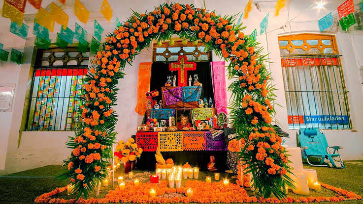

Una tradición llena de amor y recuerdos
El Día de Muertos es una celebración mexicana dedicada a recordar a las personas que ya no están con nosotros. Es una fecha llena de colores, alegría y recuerdos familiares.

Los altares pueden tener dos, tres o siete niveles. Cada uno representa diferentes aspectos de la tradición y el camino de las almas.
🌺 Flores para guiar a las almas.
🕯️ Velas para iluminar su camino.
🍞 Pan de muerto como ofrenda.
💧 Agua para calmar la sed.
📷 Fotografías para recordar a nuestros seres queridos.
🧂 Sal como símbolo de purificación.
Esta celebración nos enseña a valorar a nuestra familia, conservar nuestras costumbres y recordar con cariño a quienes dejaron huella en nuestras vidas.